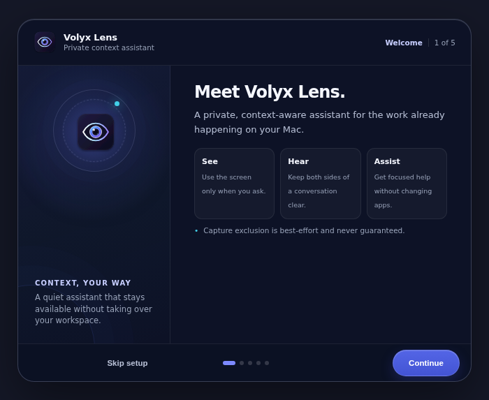

Understand the screen
Ask about the current view, solve what is visible, or bring selected coding screens into Task Context.
macOS · v0.3.1 test release
Volyx Lens is a private, context-aware assistant for the work already happening on your Mac—across your screen, voice, meetings, and coding workflows.
Current binaries are ad-hoc signed test builds. They are not notarized by Apple.
Selected context
Built for the Mac you already use
Compact when you need the screen. Expanded when you need an answer. Volyx Lens stays out of the way until you invoke it.

One lens, three separate inputs
Screen, microphone, and system audio keep distinct lifecycles. Choose a source to see what it contributes.
Explicit screen action
A current screenshot can be attached when you invoke screen assistance. Task Context can also hold a bounded set of screens in session memory for multi-step work.
Microphone / “You”
Your microphone is transcribed on its own channel while listening is active, keeping your confirmed turns separate from system audio.
System audio / “Them”
A native ScreenCaptureKit helper captures meeting audio separately, giving reply suggestions and recaps a clearer view of who said what.
Selecting a tab here explains the model; it does not start capture or contact a provider.
Privacy is a route, not a slogan
Volyx Lens checks permissions, manages bounded session context, protects stored credentials, and waits for an explicit action before routing selected data.
Third-party providers receive the data needed for the actions you invoke and apply their own terms, retention policies, and pricing.
Practical context
Volyx Lens joins the pieces already visible or audible in your current task without pretending it can see everything.
Ask about the current view, solve what is visible, or bring selected coding screens into Task Context.
Keep You and Them as separate transcript channels, then request a reply suggestion, follow-up, or bounded recap.
Save, pin, deduplicate, and remove user-selected screens locally before attaching a relevant bounded set.
Import a CV and job description. Volyx Lens stores extracted text and selects bounded relevant excerpts for supported answer actions.
Bring your own provider
Configure response and transcription providers in the app. Models, availability, billing, and data handling remain subject to each provider.
OpenAI
Anthropic
Gemini
Azure Foundry
DeepSeek
OpenAI
Azure
Deepgram
Gemini batch
Local Whisper*
A clear boundary
Modern macOS capture tools may still show Volyx Lens, and a physical camera always can. Use it only for legitimate personal notes, accessibility, study, practice, and permitted work. Follow exam, interview, workplace, platform, recording-consent, and local-law requirements.
Current test release · v0.3.1
Test builds are available for Apple Silicon and Intel Macs. Because they are ad-hoc signed and not notarized, macOS may block the first launch.
Open the GitHub releaseDownload the Apple Silicon or Intel DMG and verify the published SHA-256 checksum.
Open the DMG and drag Volyx Lens into your Applications folder.
In Finder, Control-click Volyx Lens, choose Open, then confirm Open. Do not disable Gatekeeper globally.
macOS requests microphone and Screen & System Audio Recording permissions for the corresponding capture features.
Before you install
No. You bring your own supported provider credentials. Provider billing and terms apply directly to your usage.
No. Local controls and selection happen on your Mac, but third-party providers receive the context required for actions you invoke. Optional local Whisper can handle supported transcription paths when separately installed and configured.
The current public binaries are ad-hoc signed test builds, not Apple Developer ID-signed or notarized production releases. They cannot use the trusted automatic-update path.
No. Capture exclusion is best-effort. It may not work with every macOS version, capture path, or physical camera.
Not under the PolyForm Noncommercial 1.0.0 licence. Commercial use, resale, paid redistribution, or use in a commercial product or service requires a separate licence from the copyright holder.
Microphone permission is used for your voice channel. Screen & System Audio Recording permission is used for screenshots and meeting audio. Volyx Lens does not request camera access.
Stay in control of the frame